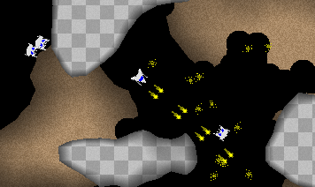

Dachon4k

Play now!
You need to have a good version of
java installed to play Dachon4k.
If you do, click here to play Dachon4k now.
Game rules
Press the arrow keys to turn and accelerate.
Press space to fire.
Shoot or avoid the enemies, and grab at four or more gems to advance to the next level.
Huh? What IS this?
Dachon 4k is an entry for the Java 4K [Game]
Programming Contest (2006 edition)
It was made by Markus Persson.